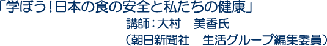
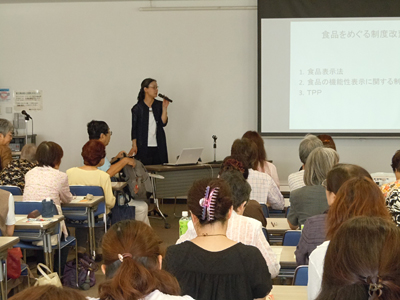

■講演要旨
大村氏は、私たちが健康を支えるにあたっての食の安全についてとして、「食品をめぐる制度改編」「大きな区切りを迎えたBSE対策」「食の安全を脅かす食中毒」「食品の放射性物質汚染」「リスクの捉え方」をお話しいただきました。

1.食品をめぐる制度改編
先の国会で食品表示法が成立し、既存の3つの表示の分かりにくさを一本化。新たに栄養成分表示も義務化されました。近年増加の50代男性の肥満、20代女性の痩せなど、日本人の健康と食生活を守るうえで必要と考えられました。閣議決定した食品の機能性表示は、科学的根拠については企業の責任だけで「○○ゼロ・2倍・たっぷり」など表示できるため、栄養成分を見ないと判断ができません。
TPP参加に向けての交渉が始まりました。食の安全に関わるSPS協定（）には、衛生植物検疫において科学的根拠なしに輸入の拒否はできないこと、一つのリスクを守るためにかける制限は最低限に、という二つの原則があります。またTBT協定は、食品や動植物検疫以外の、貿易の技術的障害に関して原産国差別の禁止や、知る権利・環境保護を重視します。しかし、並行して行われている日米交渉も、米通商代表部が他国の輸入制限には強い意見を出してくるため、各項目を二国間でどう緩めるかの議論になり兼ねないことが懸念されます。
2．大きな区切りを迎えたBSE対策
今年7月、全頭検査から48か月超牛のみの検査に切り替わりました。特定危険部位の除去も徹底されていて、BSEの病気自体の学問的解明は別として、世界の発生状況からみて、リスクはコントロールできていると言えます。国内の徹底した措置よりも、輸入措置が揺らぐのではと大きく問題視してきた経緯があります。
3．最大のリスク腸管出血性大腸菌等による食中毒
いま食の安全を脅かしているのが食中毒です。特に死者を出しているのが腸管出血性大腸菌（O-111,O-157）。他にサルモネラ、自然毒、ウェルシュ菌、カンピロバクター、ノロウイルスなど。事故以来不可能かと思われたユッケの外食での提供も可能になった技術の進歩もあります。
4．食品の放射性物質汚染
国は東日本17都県に検査計画を指示。他の道府県や各自治体、国立医薬品食品衛生研究所が流通品を検査。12年度は前年より数値は下がっています。福島の陰膳検査でも内部被ばく量は減少していますが、流通以外の食形態（川魚、イノシシ、山菜など）で、被ばく量が大きく違う人もいることを理解しなければなりません。
5．リスクの捉え方
リスクの大きさ＝「被害の大きさ」×「起きる確率」をモノサシにできますが、これは社会的措置として何を優先すべきかの目安に。しかし一般には「怖い（制御できない、自発的でない、未知である）」と感じるものがリスクの大きさになっています。科学的かだけではなく、いかに多様な価値観で社会として対応するかが問われます。市民のリスク理解は主観的、ですが、リスクは合理的に達成できる限り低く。優先順位は私たちの中にあります。